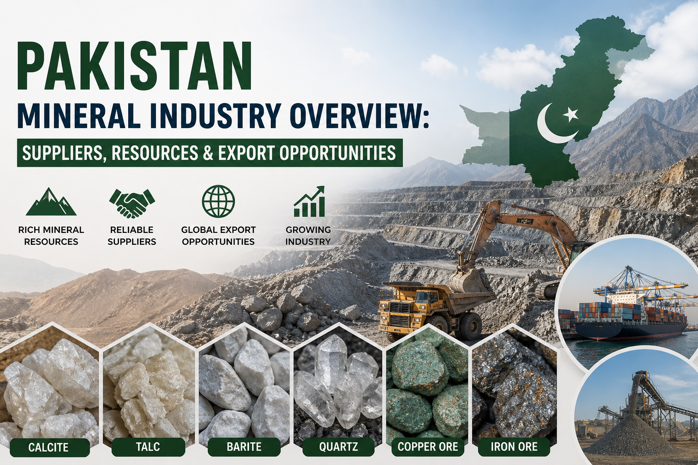

Pakistan Mineral Industry Overview: Suppliers, Resources & Export Opportunities
Pakistan is rapidly emerging as a reliable source of industrial minerals and metallurgical ores. This overview highlights key resources, mining regions, and why global buyers are increasingly sourcing minerals from Pakistan.

Pakistan's mineral industry is gaining increasing attention in global markets as a dependable source of industrial minerals, metallurgical ores, and gemstones. With growing international demand and competitive pricing, Pakistan is becoming a preferred sourcing destination for buyers seeking reliable and specification-based mineral supply.
Mineral Resources in Pakistan
Pakistan hosts a wide range of mineral resources across key regions such as Khyber Pakhtunkhwa, Balochistan, Gilgit-Baltistan, and Punjab. These regions are rich in industrial minerals including calcite, talc, barite, quartz, and feldspar, as well as metallurgical ores such as copper, iron ore, and chromite.
The country is also known for its pegmatite-hosted gemstones including aquamarine, topaz, emerald, and ruby, which are sourced from northern mountainous regions.
Industrial Minerals and Their Applications
Pakistan supplies minerals that are essential for various global industries. Calcite is widely used in plastics, paints, paper, and construction materials. Barite is critical for oil and gas drilling operations, while talc is used in ceramics, coatings, and polymer industries.
Quartz is utilized in glass manufacturing and silicon processing, while bauxite serves as a primary raw material for aluminum production. Copper ore and iron ore support metallurgical and infrastructure-related industries.
Why Global Buyers Source Minerals from Pakistan
Pakistan offers several advantages to international buyers. These include competitive pricing, availability of bulk quantities, and access to multiple mineral types within one sourcing region.
Additionally, the country's strategic geographic location allows efficient shipment to major markets including China, the Middle East, and Europe. With improving export coordination and quality verification processes, Pakistan is becoming a more reliable partner in the global mineral supply chain.
Mineral Export Infrastructure
Pakistan's mineral exports are supported by major ports such as Karachi Port and Port Qasim. These ports enable efficient logistics and shipping operations for bulk and containerized cargo, ensuring timely delivery to international destinations.
Opportunities for International Buyers
The mineral sector in Pakistan presents strong opportunities for long-term sourcing partnerships. Buyers can benefit from direct access to mining regions, flexible sourcing arrangements, and the potential for joint ventures and investment in processing facilities.
Companies that focus on specification-based sourcing and export coordination help bridge the gap between local mining operations and international market requirements.
Conclusion
Pakistan's mineral industry is positioned for steady growth and increasing global integration. With diverse resources, competitive pricing, and expanding export capabilities, the country offers a strong sourcing base for industrial minerals and metallurgical ores.
Looking for reliable mineral supply from Pakistan?
Siran Rocks & Minerals provides specification-based sourcing and export coordination tailored to international buyer requirements.
Request Quote